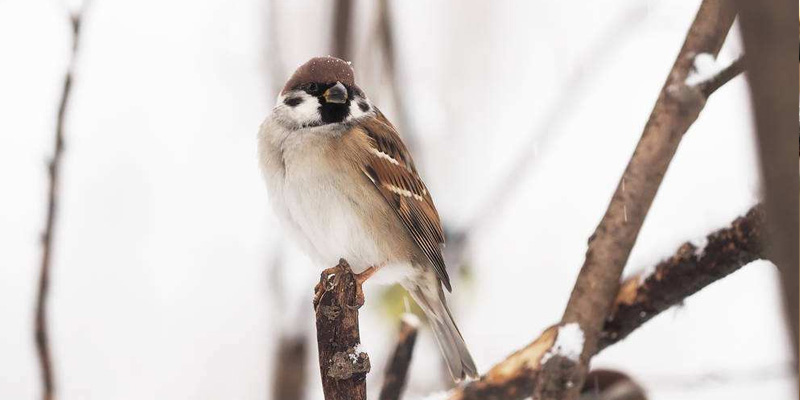
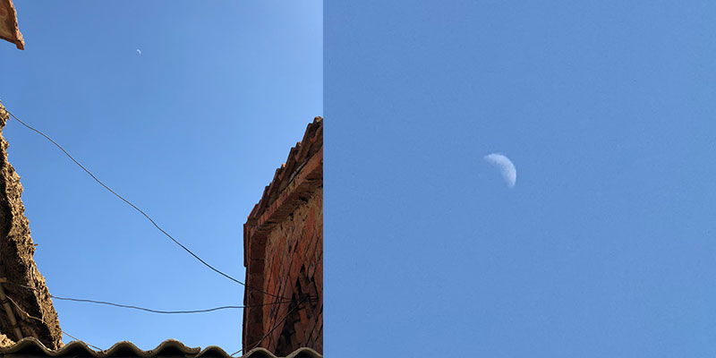
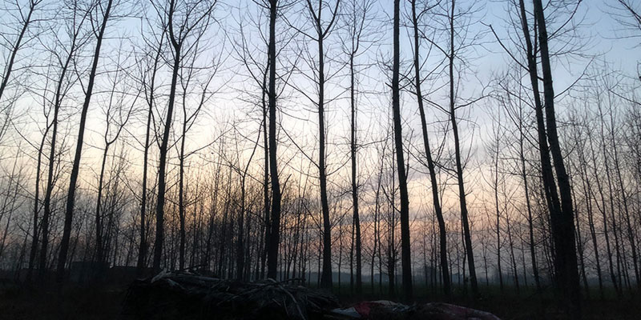

家中小记
2018春节回家所见
今天只有我一个人在家，难得体会格外的清净。与城市的喧嚣相比，家里已经格外的平静。清新的空气，悠远的旷野，宁静的村落，熟悉的乡语，热情的人们，热闹的家庭氛围都让人身心舒展。平时紧张的神思也像躺进了巨大的飘着薄雾的温泉中倏忽悠忽的徜徉！只有在去除人声后，思绪才从温热的薄雾中慢慢积聚，慢慢翻飞！
回想这几年，回家就像住旅店一样，匆匆的来匆匆的走，除去路上的奔波，亲朋的喧闹，人情的交流，漂泊的唉叹，好像没剩下些什么！家人和周围的亲朋都是一样，在城里忙碌，在城里休息，在城里度过一年中的大部分时间。好像都习惯了城里的喧嚣，却又非常不适城里的喧嚣。
城里的夜也会安静，但又好像永远无法安静。即使没有了车马人潮，也有各种电器机器昼夜不停地运转，发出嘈杂的声音。拥有很好的隔音墙，装上很好的隔音窗，阻断所有听得到的声音，也会有听不见的声波穿过一切障碍进来，不停敲打着神经末梢，让人无法安睡。
家里就不一样了，随着夜幕降临，一切都会安静下来。是真的安静，特别是冬日的夜，如果没有风，就一丝声音都没有。但也不是那种死寂的静，它静的像寒潭，通透、清澈，像旷野，广阔、悠远。这种安静让人躺下后便很快入眠，入眠后好像世间万物拥抱着身体的每一个细胞也睡着了一样，不会打扰别人，也不会受到任何打扰。一觉醒来，便已进入一个喧闹的白日世界。
在这平静的乡间，最吵闹的就是黎明时的鸟儿了。天刚刚亮，知名的不知名的鸟儿就都活跃了，像参加好声音选拔一样的赛着歌唱。 画眉鸟站在树枝上，歌声清脆、婉转、悠扬，小麻雀聚在屋顶上，挣着抢着又跳又唱。画眉鸟是个自信的歌者，不管周围多么吵闹，他只专心于自己的表演。他确实是个有实力的歌者，因为不管周围多么吵闹，他的声音依然清晰而美妙。小麻雀们像个分工不明确的乐队，他们聚在一起，却又各不相让，一个盖一个的唱着，又相互拉扯着、撕拽着，扑棱棱的扇翅声夹杂着趾爪划过屋顶的尖锐声，感觉竞争好激烈。
阵阵鸟鸣送入耳朵，大脑也渐渐清醒，睁开眼睛，视物清晰，神思清明，好喜欢这种清爽的感觉！
一大早就看的出又是一个好天气，天空纯净，空气清新，万物轻盈。随着太阳慢慢升起，碧绿无垠的麦田慢慢升腾起薄薄的雾气，那是谁家偷溜出来玩耍的炊烟吧！一缕一缕悄悄来到这旷野上，静默的低伏着，窥探着。周围无人无物，寂静无声，放下心的他和他们一下子就炸开了、沸腾了、癫狂了。他们抱成一团旋转上升，填充满麦田上方的空间，害得麦苗看不见太阳，也看不见天。突然又四散开来撒着欢的跑过这片麦田，又跑过那片麦田，让无边的麦田变成白茫茫的一片。有时躺在风的身上，从这边忽的一下漂的那边；有时攀上树梢眺望远处村庄晚来的炊烟是否带来清晨的饭香。
早饭后，太阳升高了，雾气也散了，天地间一下子变得纯澈透明了。风轻轻的，阳光软软的，连空气也格外纤细轻柔了，好像没有用呼吸，它就钻进身体里肆意地游走起来。这天最适合晒太阳了。搬个小板凳，找个舒适的角落，没有电视，不需要电脑，也用不着手机，只要阳光散满全身，就觉得无比美好。慢慢的，随着气温升腾，浑身都暖了，心也满了，再无不满，也再无欲求，身心都只能感知到无边的温热。
说起晒太阳，我最爱的就是冬日午后的阳光了。冬日午后的阳光，它像要好的闺蜜，活泼又明媚，静静的陪我数着时光；它像热烈的情人，伟岸又厚重，绵绵不断地向我输送着温情。午后阳光扫过的天空也蓝的特别，纯净而悠远，没有一缕云彩，也没有一丝杂质，才下午两三点，便看的见月亮在中天投来光辉！沐浴在冬日午后的阳光里，四肢渐渐绵软，睡意慢慢朦胧，但偏又不会睡去。捧一杯奶茶，奶与茶的香沿着指尖飘进空中，又慢慢漂远，也飘进身体的每个角落。总觉得冬日午后的阳光和奶茶是天生的一对，有了它们这世界就变得柔软，温情，而甜……
随着阳光西斜，村落又慢慢安静了，鸟儿都归了巢。而我的屋顶，却又热闹起来了，原来是那群吵闹的麻雀。家里盖了新屋，房顶是新的材料，房梁也用了结实的钢管。这空心的钢管撑起温暖的小窝，也给鸟儿提供了暖巢。房子钢建好，这些鸟儿便大方的住下了，直到现在，早吵晚闹的成了昼夜交替的信使。扑棱棱，最后一直麻雀入巢，小村落又在暮色笼罩下安静了……

18
赞
18
查看
18
留言

最新留言
访客2018305
12:12
读起来一点都不安静，感觉还神热闹呢
访客20180228
20:12
麻雀麻雀